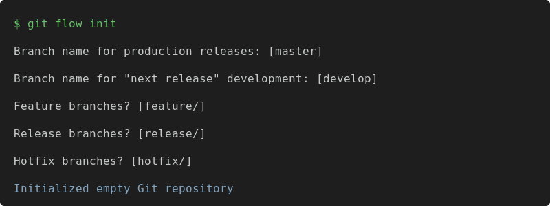
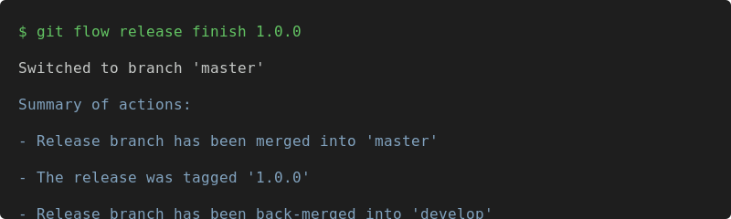

Selamlar. Bu yazımda versiyon kontrol sistemlerinden kısaca bahsedip, Git Flow’un ne olduğunu ve nasıl kullanıldığını detaylı bir şekilde anlatacağım. Versiyon kontrol sistemleri, yazılım geliştirme süreçlerinde kodun versiyonlarını takip etmek ve yönetmek için kullanılan önemli araçlardır. Git Flow ise bu versiyon kontrol sistemini daha etkili kullanmamızı sağlayan bir branching modelidir.
Versiyon Kontrol Sistemi Nedir?
Versiyon kontrol sistemi, bir veya daha fazla dosya, doküman (yazılım projesi, ofis belgesi vb.) üzerinde yaptığımız değişiklikleri adım adım kaydeden, daha sonra belirli bir sürüme geri dönebilmemizi sağlayan ve istersek bunu internet üzerinde depoda (repository) saklamamızı ve yönetmemizi sağlayan bir sistemdir. Git, SVN, BitKeeper, Mercurial sürüm kontrol sistemlerine örnek olarak gösterilebilir.
Neden Versiyon Kontrol Sistemi Kullanıyoruz?
Her dosyanın tam bir uzun vadeli değişiklik geçmişi tutulur.
Bu, dosya üzerinde yıllar içinde birçok kişi tarafından yapılan her değişikliğin tutulması anlamına gelir.
Bu da bulunduğumuz konuma nereden geldiğimizi anlamak için eski ve yeni kodumuz arasında karşılaştırma yapmamızı sağlar.
Ekip üyelerinin eşzamanlı olarak aynı kod üzerinde çalışmasına imkan verir.
Alt sürümler oluşturarak yazılım üzerinde farklı çalışmaları yürütüp, sonrasında ana yazılıma bunu entegre etmek mümkündür.
Yazılımda yapılan her değişikliği takip edip proje yönetimine bağlayabilme imkanı sağlar.
Yazılım üzerindeki sorunların, sürümler ile ilişkilendirilmesine ve takip edilebilmesine olanak sağlar.
Projede hatayla karşılaştığımız durumlarda eski kod kaydına dönmemizi sağlar.
Versiyon Kontrol Sistemleri
Lokal VKS: En eski versiyon kontrol sistemi yaklaşımıdır. Çalıştığımız projemiz ve yaptığımız değişiklikler kullanıcı makinesi üzerindeki veritabanında tutulur. Her yapılan commit bir versiyon olarak tutulur ve commit değerine hash ataması yapılarak her versiyon birbirinden ayırt edilmektedir. Ayrıca versiyon görüntüleme imkanını sağlar. Ancak bu sistemde sadece bir kullanıcı etkin bir şekilde çalışabilir.
Merkezi VKS: Birden fazla kişinin bir proje üzerinde etkin çalışması için ortaya atılmış versiyonlama sistemidir. CVS, SVN birer merkezi versiyon kontrol sistemleridir. Bu sistemde proje ortak bir repository’de tutulur ve birden fazla geliştirici aynı repository üzerinde checkout ve commit işlemlerini gerçekleştirmektedir. Bu yöntemde herkesin projeye katkı sağlamasının yanı sıra bazı ciddi sorunları vardır. Tek merkezli sunucunun 1 saatliğine arızalanması durumunda, kullanıcılar 1 saat boyunca çalışmalarını veya çalıştıkları projenin sürümlenmiş kopyalarını kaydetmeleri mümkün olmayacaktır.
Dağıtık VKS: Merkezi versiyon sistemlerinin geliştiricilerin çevrimdışı çalışabilmesi ve repository’nin zarar görmesi durumunda geri getirme gibi eksikliklerinden dolayı ortaya atılmış bir versiyon sistemidir. Git, Mercurial, BitKeeper gibi sistemler dağıtık versiyon sistemlerine örnek gösterilebilir. Bu sistemlerde merkezi bir repository olmayıp, proje üzerinde çalışan her makine, projenin kopyasını kendi yerel bilgisayarında tutmaktadır. Geliştiriciler proje üzerinde değişiklik yapmak veya proje geçmişine göz atmak istediklerinde, uzak depo ile iletişime geçmek zorunda değildir. Sunuculardan biri çökerse ve o sunucu üzerinde ortak çalışma yürüten sistemler varsa, geliştiricilerden birinin projeyi sunucuya geri yükleyerek sistem kurtarılabilir. Özet olarak aynı projede farklı geliştiriciler, farklı biçimlerde çalışma yürüterek, farklı iş akışları ile çalışabilmeyi sağlar.
Git Flow Nedir?
5 Ocak 2020 tarihinde https://nvie.com/posts/a-successful-git-branching-model/ adresinde yayınlanan bir yazı ile nvie, git repolarını derli toplu tutmak adına bir model önerdi. Daha sonra bu modeli kullanmayı kolaylaştıran git eklentilerini de barındıran Git-Flow isimli bir proje yayınladı. GitFlow modeli temel olarak git versiyon kontrol sistemine dayanıyor. Yani modelin tüm işleyişini git komutları ile de yürütmek mümkün.
Git Flow’un Avantajları ve Dezavantajları
Avantajları:
Düzenli ve tahmin edilebilir bir geliştirme süreci sağlar
Büyük ekipler için ideal bir yapı sunar
Sürüm yönetimini kolaylaştırır
Her branch’in net bir amacı vardır
Paralel geliştirmeyi destekler
Dezavantajları:
Küçük projeler için fazla karmaşık olabilir
Sürekli teslimat (continuous delivery) için uygun olmayabilir
Branch yapısı bazen gereksiz karmaşıklığa yol açabilir
Ek araç kurulumu gerektirir
Öğrenme eğrisi diğer modellere göre daha yüksektir
Git Flow’a Alternatifler
GitHub Flow: Daha basit bir model, sadece master ve feature branch’lerini kullanır
GitLab Flow: Git Flow ile GitHub Flow arasında bir denge kurar
Trunk Based Development: Ana dal üzerinde geliştirmeye odaklanır
Git Flow Çalışma Prensibi
Git Flow modelinde 5 ana branch bulunmaktadır:
master: Ana dallardan olan Master, proje süresince var olan daldır. Master dalında her zaman canlıya alınabilecek kod bulunur. İdeal şartlarda Master dalına yapılan her bir commit bir versiyondur ve “git tag” ile işaretlenmesi yani sürüm numarası verilmesi gereklidir. Master dalına doğrudan commit yapılmaz, sadece hotfix ve release dallarından merge işlemleri yapılır.
develop: Develop dalı da proje süresince var olan diğer ana daldır. Develop dalında ise bir sonraki sürüm için yapılan değişiklikler yer alır. Tüm feature dalları önce bu dala merge edilir. Bu dal projenin ana geliştirme dalıdır ve sürekli entegrasyon (CI) süreçleri genellikle bu dal üzerinden yürütülür.
hotfix: Hotfix dalı yayında olan sürümde kritik bir hata olduğunda ve hatanın acilen çözülüp yayına alınması durumunda kullanılır. Açılan Hotfix dalı master dalından oluşturulur ve isimlendirilmesi genellikle ‘hotfix/[versiyon]-[açıklama]’ formatında yapılır. Hotfix dalında gerekli hata çözümü yapıldığı zaman bu dal Developer ve Master ile birleştirilir. Master ile birleştirme sonrası yapılan değişiklik yeni bir sürüm numarası ile etiketlenir.
feature: Yeni özellik ekleneceğinde bu özellik için Feature dalı açılır. Feature dalları her zaman develop dalından oluşturulur ve isimlendirilmesi genellikle ‘feature/[özellik-adı]’ formatında yapılır. Özelliklere burada görece yapılacak değişiklikler denebilir. Aynı anda birden fazla özellik dalı açılabilir. Yani farklı geliştiriciler farklı özellikler üzerinde çalışabilir. Özelliklerin ayrı dallarda geliştirilmesi hem Develop dalının gereksiz commit’ler ile dolmasını engeller hem de bu yöntemle özellikten vazgeçilmesi durumunda yalnızca özellik dalının silinmesi yeterli olur. Özellik tamamlandığında bu dal ile Develop dalı birleştirilir ve özellik dalı silinir. Yani özellik dalları yalnızca geliştirme süresince yaşamlarını sürdürür. Tabii bu süreçte Develop dalına ara ara kontrol amaçlı pull yapılması gerekebilir çünkü bir başka geliştirici özellik dalını önce bitirmiş ve Develop dalına versiyon geçmiş olabilir. Feature dalları isimlendirilirken master, release, develop ve hotfix içermeyen isimler verilmelidir.
release: Tüm değişiklikler bitti diyelim. Sonrasında yeni bir sürüm yayınlanacağı zaman Develop dalından yeni bir Release dalı oluşturulur. Release dalları genellikle ‘release/[versiyon]’ formatında isimlendirilir. Sürümdeki son değişiklikler, sürüm numarası değiştirmek vb. gibi işlemler bu dal içerisinde gerçekleştirilir. Release dalında sadece hata düzeltmeleri yapılmalı, yeni özellik eklenmemelidir. Gerekli tüm değişiklikler tamamlandığında Release dalında tamamlanan tüm değişiklikler Master ve Develop branch’lerine merge edilir. Master dalında git tag ile sürüm numarası etiketlenir ve daha sonra Release branch’i silinir.
Git Flow Örnek Proje
/brew install git-flow > git flow init
Öncelikle “brew install git-flow” ile kurulumu sağlıyoruz. GitFlow git ile birlikte gelmiyor. Ayrıca kurulum yapılmalı. Dezavantajlarından bir tanesi olarak kabul ediliyor. Git tarafında projeyi başlatmak için “git init” komutunu giriyorduk. Git-flow için ise “git flow init” komutunu giriyoruz ve git-flow sürecini başlatıyoruz. Komut çalıştığında eğer herhangi bir repo mevcut değilse önce repo oluşur. Daha sonra kullanıcıya süreç için kullanılacak branch isimlerini sorar. Dal isimleri özelleştirilebilir durumdadır ancak önerilen default değerlerin bırakılmasıdır.
/git flow feature start performance
Bu komut ile yeni bir feature dalı açılır. Özellik adı performans olduğundan varsayılan dal feature/performans olacaktır. Aynı işi mevcut git komutuyla da yapabiliriz. Bunun için girmemiz gereken komut ise “git checkout -b myFeature feature/performans” olacaktı.
/git flow feature finish performance
Bu komut ile daha önce açılmış olan dal kapatılır. Kapatma işlemi önce özellik dalının develop dalına merge edilmesi ile başlar ardından özellik dalının silinmesi ile sonlanır. Komut çalıştırıldığında şayet değişiklikler commit edilmedi ise hata verir. Commit sonrası push işlemi yapılmaz ise hata verir. Normal git komutları ile bu işlemi yapmak için önce ilgili dalda commit yapılır daha sonra sırasıyla “git checkout develop > git merge –no-ff feature/performans > git branch -D feature/performans” komutları çalıştırılır.
/git flow release start 1.0.0
Bu komut girildiğinde yeni bir sürüm yayınlanmaya hazır hale gelir. Komut çalıştırıldığında Develop dalından yeni bir release/1.0.0 dalı oluşur. Mevcut git komutu ile bu işlemi gerçekleştirmek için ise “git checkout -b release/1.0.0 develop” komutu çalıştırılır.
/git flow release finish 1.0.0
Komut girildiğinde hazırlanması tamamlanan sürüm master dalına taşınır. Yapılan değişiklikler hem develop hem master dalı ile birleşir. Master dalındaki son commit sürüm numarası ile etiketlenir. Ardından release dalı otomatik silinir. Aynı işlemi git komutları ile birlikte yapmak için aşağıdaki komutlar sırayla çalıştırılır.
/git flow hotfix start 1.0.1
Komut ile yeni bir hotfix başlatılır. Hotfix dalları acil güncellemelerde kullanılır ve master dalından oluşturulurlar. Komut çalıştığında master dalından dallanan yeni bir hotfix/1.0.1 dalı oluşur. Git komutu ile işlemi yapmak için “git checkout -b hotfix/1.0.1 master” komutu çalıştırılır.
/git flow hotfix finish 1.0.1
Komut ile hotfix tamamlanır. Değişiklikler hem Develop hem Master dalına alınır. Master dalı 1.0.1 ile etiketlenir ve hotfix dalı silinir. “git tag -l” komutu çalıştırıldığında sürüm versiyonları görülür. Aynı işlemi mevcut git komutlarıyla yapmak için aşağıdaki komutlar sırasıyla çalıştırılır.
Feature branch’leri için açıklayıcı isimler kullanın (örn: feature/user-authentication)
Hotfix ve release branch’leri için semantic versioning kullanın
Commit Mesajları
Açıklayıcı commit mesajları yazın
Conventional Commits standardını takip edin
Her commit’in tek bir amacı olmasına dikkat edin
Code Review Süreci
Feature branch’lerini merge etmeden önce code review yapın
Automated testing süreçlerini kullanın
Dokümantasyon güncellemelerini unutmayın
Merge Stratejisi
–no-ff (no fast-forward) parametresini kullanın
Merge çakışmalarını hızlıca çözün
Squash commit’leri kullanmayı değerlendirin
Sonuç
Git Flow, modern yazılım geliştirme süreçlerinde branch yönetimini sistematik ve düzenli hale getiren etkili bir yaklaşımdır. Bu workflow sayesinde ekipler daha organize çalışabilir, sürüm kontrolünü daha iyi yapabilir ve kod kalitesini artırabilir. Özellikle büyük projelerde ve ekip çalışmalarında Git Flow’un sunduğu yapılandırılmış branch stratejisi, geliştirme süreçlerini önemli ölçüde iyileştirir. Yukarıda bahsedilen best practice’leri takip ederek, Git Flow’u projenizde başarıyla uygulayabilir ve yazılım geliştirme süreçlerinizi daha verimli hale getirebilirsiniz.